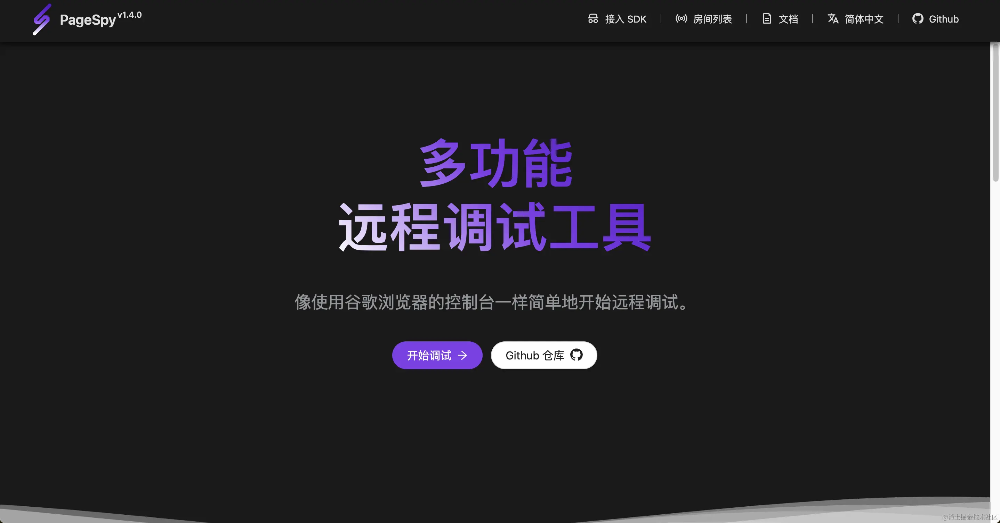
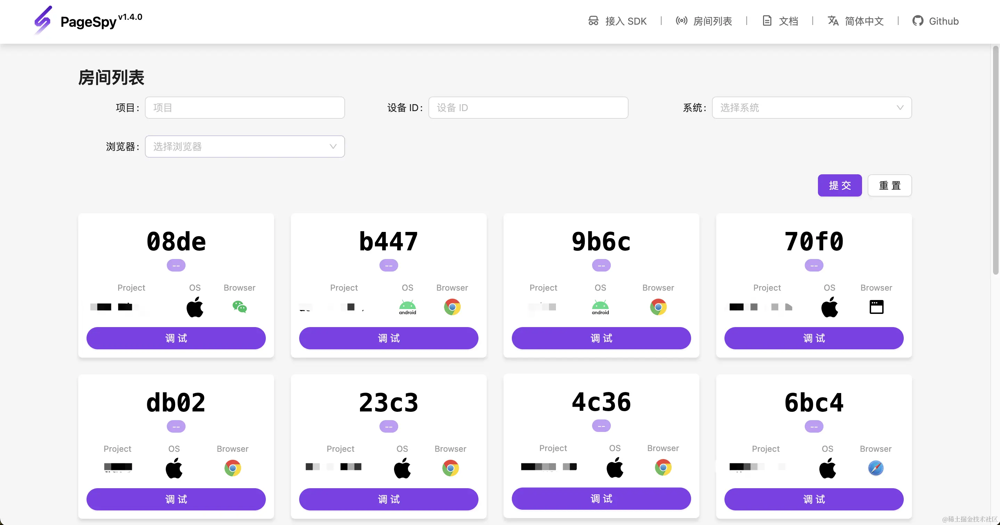
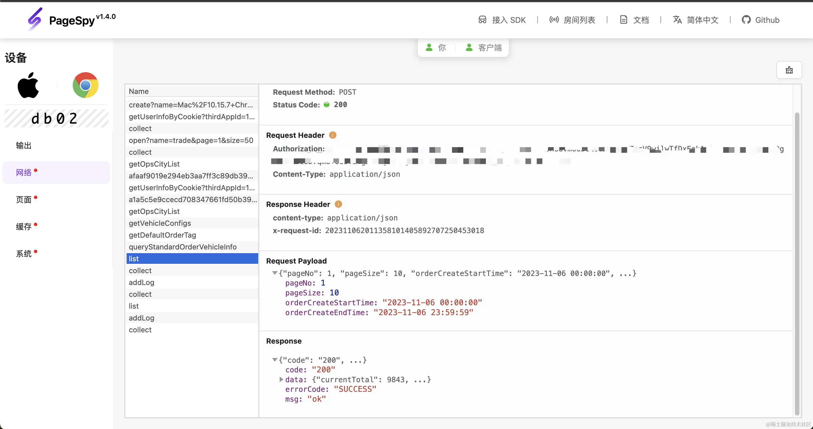
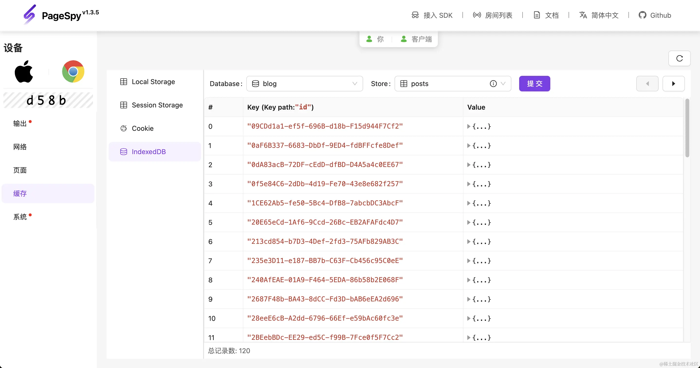

PageSpy:支持远程调试的 vConsole
NaN/NaN/NaN · YinHao
PageSpy
Page Spy 是由货拉拉大前端开源的一款用于调试 H5 、或者远程 Web 项目的工具。基于对原生 API 的封装，它将调用原生方法时的参数进行过滤、转化，整理成格式规范的消息供调试端消费；调试端收到消息数据，提供类控制台可交互式的功能界面将数据呈现出来。
PageSpy 是一个强大的开源前端远程调试平台，它可以显著提高我们在面对前端问题时的效率。以下是 PageSpy 的一些主要特点：
- 一眼查看客户端信息 PageSpy 会对客户端的运行环境进行识别，其中系统识别支持 Mac / iOS / Window / Linux / Android，浏览器识别支持谷歌、火狐、Safari、Edge、微信、UC、百度、QQ；
- 实时查看输出： PageSpy 可以实时捕获并显示程序输出，包括 Console、Network、Storage 和 Element。这使开发人员能够直观地了解页面的外观和行为，无需依赖用户的描述或截图。
- 网络请求监控： PageSpy 还可以捕获和显示页面的网络请求，有助于开发人员更好的查看与后端的交互。
- 远程控制台： PageSpy 支持远程调试 JavaScript 代码，允许开发人员执行 JavaScript 代码在用户的浏览器上运行。这对于排查特定问题或测试代码修复非常有帮助。
- 跨浏览器兼容性： SDK 可以在各种主流浏览器中运行，确保你可以检查和调试不同浏览器上的问题。
- 用户体验提升： 通过快速识别和解决前端问题，PageSpy 可以显著提升用户体验，减少用户因前端问题而受到的不便。
使用 PageSpy 进行远程调试
使用 PageSpy 进行远程调试是相对简单的。以下是一些基本步骤：
- 部署 PageSpy： 首先，PageSpy 提供了 Docker、Node 和 Release 的一键部署方案，点击查看；
- 实例化 SDK： PageSpy 成功部署后，你可以在项目中引入对应的 SDK 文件并进行实例化，它提供了多场景类型的参数，以便于用户对它的行为进行定制。
- 实时监控页面： 之后，你可以实时查看页面的各种数据，这有助于你直观地理解页面的问题。
- 监控网络请求： 你还可以查看所有的网络请求，包括请求的 URL、响应代码和响应时间。这可以帮助你识别与后端通信相关的问题。
- 解决问题： 借助 PageSpy 提供的信息和工具，你可以更快速地定位和解决前端问题，从而提高用户体验。



